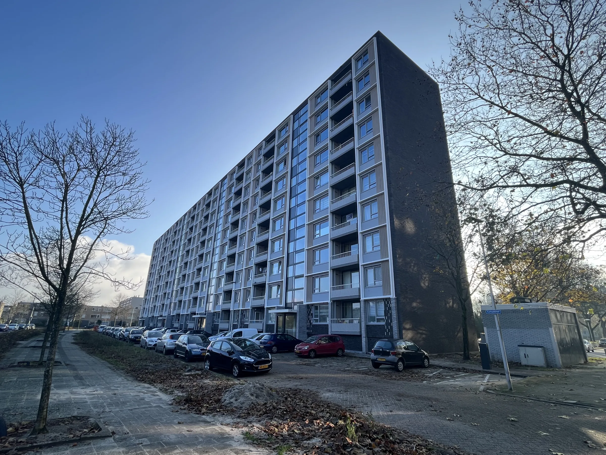
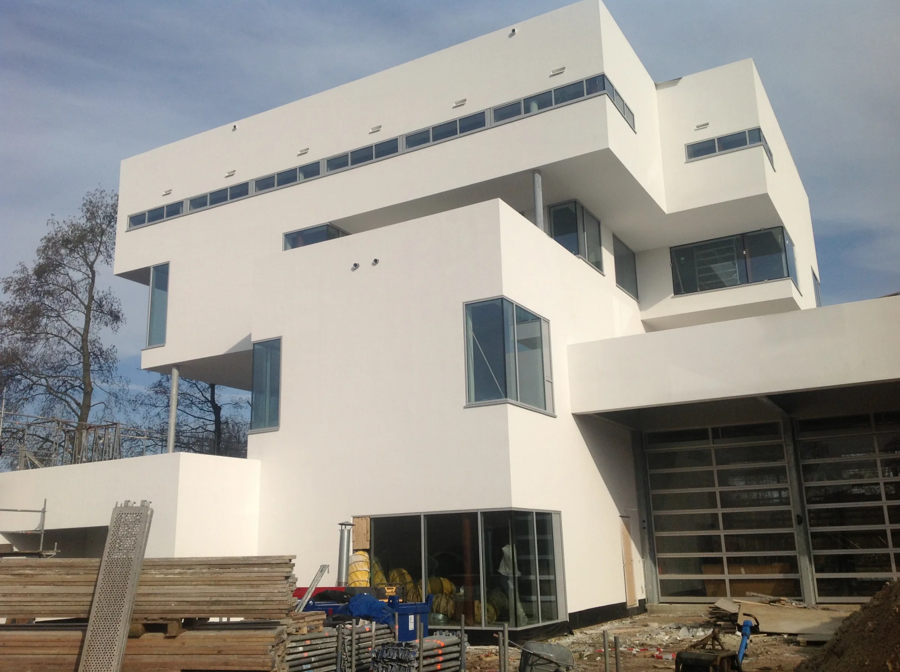
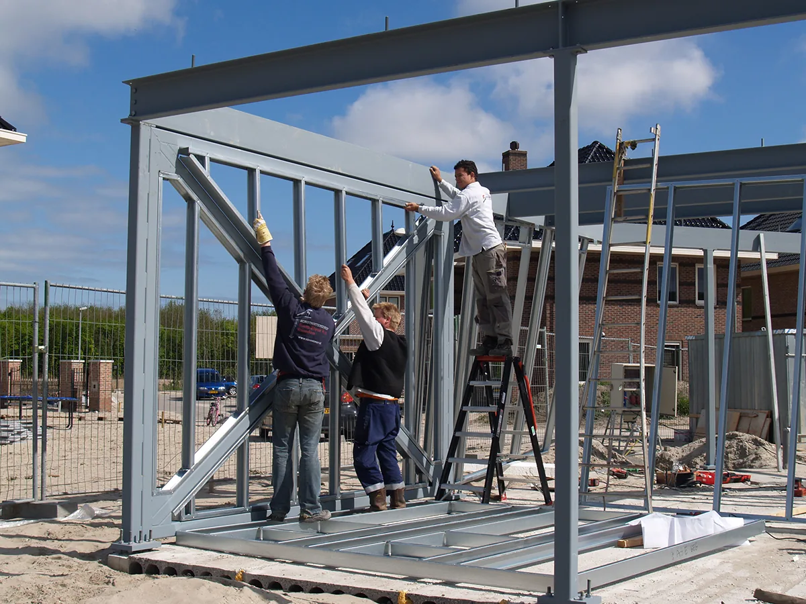

Wij ontwerpen, rekenen, produceren, transporteren en monteren het stalen frame met eigen mensen. Eén partij van de eerste berekening tot het frame dat overeind staat, dus geen naden tussen leveranciers en een korte doorlooptijd.
Waarom opdrachtgevers voor een stalen frame kiezen
Een stalen frame is licht en sterk. Dat levert grote overspanningen op, dus weinig dragende binnenwanden en een indeling die u later opnieuw kunt maken. Bij een bestaand gebouw betekent hetzelfde lage gewicht dat de extra belasting beperkt blijft.
De elementen worden op maat gemaakt in de fabriek en op de bouwplaats in elkaar gezet. Daardoor staat het casco er snel, is de overlast voor omwonenden korter, en ligt de prijs doorgaans onder die van traditioneel bouwen.
Wij werken voor particuliere opdrachtgevers, projectontwikkelaars, aannemers, woningcorporaties, VvE’s, vastgoedeigenaren en overheden. Voor de één maken we één villa, voor de ander seriematige woningbouw of een optopping van tientallen woningen.
Werkwijze
Hoe uw project bij ons loopt
Vijf stappen, van het inventariseren van de mogelijkheden tot de oplevering die we samen met u nalopen. Uw projectleider is in alle vijf uw aanspreekpunt.
-
01
Oriëntatie op de mogelijkheden
We gaan eerst in op wat u wilt bouwen.
-
02
Ontwerp, tekening en berekening
Is de best passende oplossing gekozen, dan maakt onze ontwerp-, teken- en berekendivisie het plan van aanpak.
-
03
Fabricage op maat
De profielen worden in onze eigen productiefaciliteit gebogen, gestanst en gesneden.
-
04
Transport en montage
Het frame gaat als bouwpakket naar de locatie, of we monteren het voor in onze werkplaats en vervoeren het met ons eigen wagenpark.
-
05
Oplevering
Bij de oplevering lopen we het geleverde werk met u na en stellen we in overleg vast of alle afspraken zijn nagekomen.
Werkzaamheden
Waarvoor wij staalframes maken
Drie richtingen, met daaronder de vraag waarmee opdrachtgevers meestal binnenkomen.
De techniek erachter
Wat het frame is, hoe het wordt gerekend en getekend, en waarmee de wanden en gevels worden gesloten.
Villa in Bergen
Vrijstaande villa van twee lagen met een plat dak, grote glasvlakken over de volle breedte en een uitkragende bovenverdieping, gebouwd in een bosrijke omgeving.
Utrecht portiek flats renovatie
Renovatie van portiekflats, sinds 2018 in uitvoering. Op de foto’s zijn de bestaande galerijflat en de nieuwe geveldelen te zien.

Brandweerkazerne Zwolle
Brandweerkazerne met een wit, geleed volume waarin de verdiepingen ten opzichte van elkaar verspringen. Op de bouwfoto’s is de stalen draagconstructie achter de gevel te zien.

Over ons
Engineering, productie en montage in één hand
Onze engineers rekenen en tekenen het frame. In onze eigen productiefaciliteit worden de profielen gebogen, gestanst en gesneden, en een vast team monteurs zet ze op de bouwplaats in elkaar. De C100-profielen maken we zelf; grotere C-profielen komen van onze partners.
Dat u met één partij te maken heeft, scheelt u de afstemming tussen tekenaar, leverancier en montageploeg. Loopt er iets anders dan gedacht, dan zit degene die het frame heeft gerekend in hetzelfde bedrijf als degene die het monteert.
